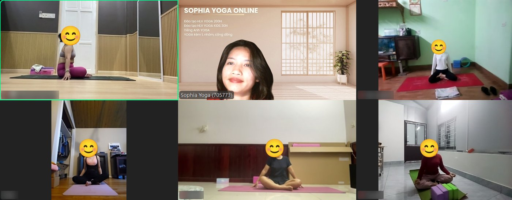
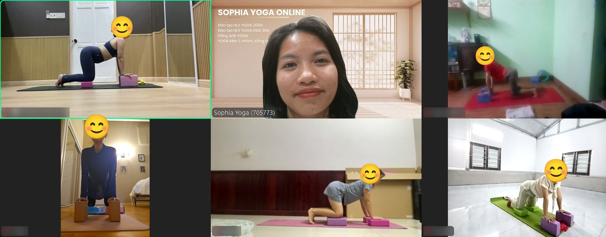
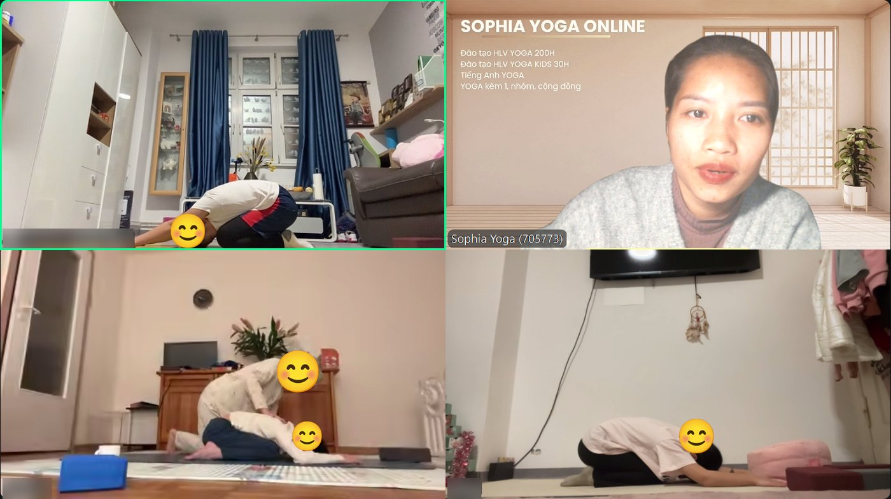
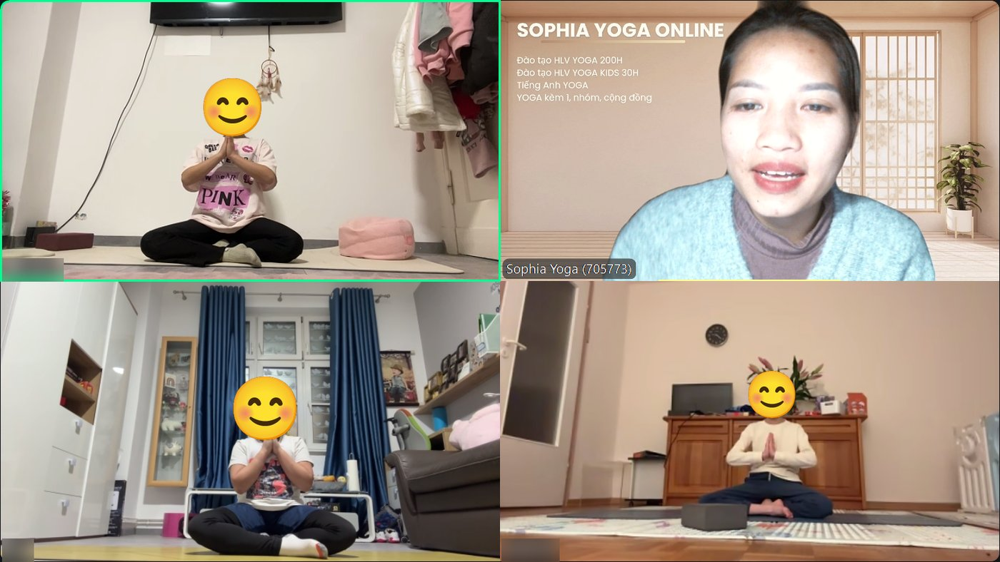

Yoga người lớn · Nỗi lo thời hiện đại
Ứng dụng yoga cân bằng phục hồi cho nỗi cô đơn: khi lúc nào cũng online mà vẫn thấy một mình
Danh bạ vài trăm người. Nhóm chat nào cũng sáng đèn. Vậy mà có những tối ngồi một mình, cầm máy lên rồi đặt xuống, không biết nhắn cho ai.
Lớp Zoom buổi tối của Sophia có những người ở rất xa nhau. Người ở Hải Phòng, người ở Hà Nội, người ở tận nước ngoài. Mỗi người một ô vuông nhỏ, một góc phòng riêng, một tấm thảm riêng.
Có một bạn mới vào lớp, buổi đầu tắt camera. Buổi thứ hai bật lên, ngồi ở góc xa, ít nói. Đến khoảng tuần thứ ba, cuối buổi, bạn ấy nán lại sau khi cả lớp đã thoát ra. Bạn kể ở thành phố này bạn không quen ai. Đi làm về thì ăn một mình, xem điện thoại một mình, ngủ.
“Em không nghĩ là tập qua màn hình mà lại thấy có người ở bên.”
Cô không nói được gì nhiều. Chỉ bảo: tuần sau em lại vào nhé, cả lớp chờ.
Cô đơn không phải chuyện của riêng ai. Nó đến với sinh viên xa nhà, với người mẹ ở nhà chăm con nhỏ, với người làm văn phòng ngồi giữa hai chục đồng nghiệp, với ông bà có con cháu đi làm xa. Và nhiều khi nó đến ngay giữa một ngày rất đông người.
Bài này không hứa làm hết cô đơn. Sophia chỉ muốn cùng nhìn lại nỗi buồn này trên cả năm thể, rồi chia sẻ những gì yoga có thể làm: hơi thở để thân bớt căng, những phút thiền gửi lòng tốt để tim mềm ra, chuỗi tư thế mở lồng ngực, và những bước nhỏ để quay lại với người thật, việc thật.

- Cô đơn là gì
- Ba câu hỏi nhỏ
- Năm thể
- Năm phút gửi lòng tốt
- Chuỗi 15 phút mở lòng
- Bảy ngày, bảy lần chạm
- Giới luật
- Khi nào cần tìm hỗ trợ
Cô đơn là gì, và vì sao nó làm mình mệt
Ở một mình và cô đơn là hai chuyện khác nhau. Có người sống một mình mà thấy đủ đầy. Có người sống giữa gia đình đông đúc mà vẫn thấy không ai hiểu mình. Cô đơn là khoảng cách giữa sự gắn bó mình cần và sự gắn bó mình đang có.
Nhà tâm lý học John Cacioppo, người nghiên cứu về cô đơn gần ba mươi năm ở Đại học Chicago, ví cô đơn giống như cơn đói. Đói nhắc mình đi ăn. Cô đơn nhắc mình tìm về với người khác. Đó là một tín hiệu bình thường của con người, không phải lỗi của ai. Nhưng khi tín hiệu ấy kéo dài mãi mà không được đáp lại, cơ thể bắt đầu ở trong trạng thái cảnh giác: ngủ chập chờn hơn, dễ nghĩ người khác không thích mình hơn, và vì thế lại càng ngại tìm đến người khác. Ông kể kỹ điều này trong cuốn Loneliness (2008).
Bị bỏ rơi cũng đau thật. Trong một thí nghiệm ở Đại học California, Los Angeles, người tham gia chơi một trò ném bóng trên máy tính rồi bị hai người kia “quên” không ném cho nữa. Ảnh chụp não cho thấy cảm giác bị gạt ra ngoài làm sáng lên một vùng não có liên quan đến cảm giác đau thể chất (Eisenberger và cộng sự, Science 2003). Nên khi ai đó nói “cô đơn đến đau lòng”, có lẽ đó không chỉ là cách nói.
Gắn bó và sức khỏe. Một tổng hợp 148 nghiên cứu với hơn 300.000 người cho thấy những người có các mối quan hệ xã hội gắn bó hơn có khả năng sống lâu hơn khoảng 50% trong thời gian theo dõi (Holt-Lunstad và cộng sự, PLoS Medicine 2010). Năm 2025, Tổ chức Y tế Thế giới ước tính khoảng 1 trên 6 người trên thế giới đang thấy cô đơn.
Online nhiều chưa chắc đã gần. Một khảo sát gần 1.800 người trẻ ở Mỹ thấy người dùng mạng xã hội nhiều nhất có khả năng cảm thấy bị cô lập cao hơn người dùng ít nhất (Primack và cộng sự, 2017). Đây là mối liên quan, không chứng minh mạng xã hội gây ra cô đơn. Có khi chính người đang cô đơn tìm đến màn hình nhiều hơn.
Nghiên cứu về sự phát triển của người trưởng thành ở Harvard theo dõi hàng trăm người từ năm 1938 đến nay. Hai người phụ trách hiện tại, Robert Waldinger và Marc Schulz, tóm lại trong cuốn The Good Life (2023) rằng điều gắn với một cuộc đời khỏe mạnh và hạnh phúc nhất không phải tiền hay danh tiếng, mà là chất lượng các mối quan hệ. Không cần nhiều. Chỉ cần thật.
Cô kể những điều này để ai đang cô đơn biết rằng mình không yếu đuối. Mình chỉ đang đói một thứ mà con người nào cũng cần.
Ba câu hỏi nhỏ
Các nhà nghiên cứu hay dùng ba câu hỏi ngắn để hỏi về cảm giác cô đơn (Hughes và cộng sự, 2004). Thử trả lời theo những gì mình thấy trong vài tuần gần đây. Không ai xem đâu. Chỉ để mình nhìn rõ mình hơn một chút.
1. Mình có hay thấy thiếu người bầu bạn không?
2. Mình có hay thấy bị bỏ ra ngoài không?
3. Mình có hay thấy tách biệt với mọi người không?
Đây không phải bài chẩn đoán. Kết quả chỉ để mình tự hiểu, không lưu lại ở đâu cả.
Cô đơn trên cả năm thể
Yoga nhìn con người qua năm lớp: thân, khí (hơi thở và năng lượng), tâm (cảm xúc), trí (suy nghĩ) và tinh thần (sự bình an sâu bên trong). Ai muốn tìm hiểu kỹ có bài Năm thể của con người. Cô đơn không chỉ nằm trong lòng. Nó để lại dấu trên cả năm lớp.
Thân
Ít được chạm, ít được ôm. Vai so lại, ngực khép. Ngủ không sâu. Ngồi một chỗ lâu.
Khí
Hơi thở nông và cao. Hay thở dài. Cuối ngày thấy cạn mà không rõ vì sao.
Tâm
Buồn, tủi, dễ chạnh lòng. Thấy ai cũng vui, chỉ mình mình lạc lõng.
Trí
Hay đoán người khác nghĩ xấu về mình. Ngại nhắn trước vì sợ làm phiền.
Tinh thần
Thấy mình không thuộc về đâu. Như đang sống bên lề cuộc đời của chính mình.
Vì vậy cách chăm cũng đi trên cả năm lớp. Cô thường bắt đầu từ hơi thở, vì đó là lớp gần nhất mà mình chạm được ngay. Rồi đến trái tim, rồi đến thân thể. Và cuối cùng, quan trọng nhất, là bước ra khỏi phòng để gặp một người thật.
Năm phút gửi lòng tốt
Trong truyền thống thiền, có một cách tập tên là Metta, tạm dịch là thiền tâm từ, hay thiền gửi lòng tốt. Mình ngồi yên, thở chậm, và thầm gửi những lời chúc lành: trước hết cho chính mình, rồi cho một người thương, một người quen sơ, một người mình đang khó chịu, và cuối cùng cho tất cả mọi người.
Nghe thì giản dị. Nhưng với người đang cô đơn, chuyện gửi lời chúc cho chính mình có khi là phần khó nhất.
Vài phút cũng có tác dụng. Ở Đại học Stanford, chỉ vài phút thiền tâm từ hướng về ảnh một người lạ đã làm người tham gia thấy gần gũi và thiện cảm hơn với người đó, so với nhóm chỉ ngắm ảnh (Hutcherson, Seppälä, Gross, Emotion 2008).
Biết chấp nhận làm bớt cô đơn. Một thử nghiệm năm 2019 với 153 người lớn cho tập chánh niệm qua ứng dụng điện thoại trong hai tuần. Nhóm được dạy cả quan sát lẫn đón nhận cảm xúc một cách dịu dàng thấy bớt cô đơn khoảng 22%, và mỗi ngày có thêm khoảng hai lần trò chuyện với người khác (Lindsay và cộng sự, PNAS 2019).
Ngồi thoải mái, đặt một tay lên ngực. Thở theo quả bóng: hít vào bốn nhịp, thở ra sáu nhịp. Mỗi phút, câu chúc sẽ đổi sang một người khác. Chỉ cần thầm đọc theo. Nếu thấy lòng trống không, không sao cả. Cứ đọc. Lòng sẽ đến sau.
Tay đặt lên ngực. Mắt nhắm nhẹ.
Hít vào 4 nhịp, thở ra 6 nhịp. Hết giờ sẽ có tiếng chuông nhỏ.
Có người tập xong thấy ấm. Có người khóc. Có người không thấy gì. Cả ba đều bình thường. Cô hay nhắc học viên: thiền tâm từ không bắt mình phải thấy yêu thương ngay. Nó chỉ mở ra một cánh cửa nhỏ, để một ngày nào đó yêu thương có lối đi vào.
Chuỗi 15 phút mở lòng
Người đang buồn thường ngồi co lại, vai khép, ngực hóp. Thân và tâm đi cùng nhau. Chuỗi này cô hay cho lớp tập vào buổi tối: mở dần lồng ngực, cho tay được tự ôm lấy mình, rồi nằm xuống để được đất đỡ. Không cần dẻo. Gạch, gối, chăn đều dùng được.
Ngồi, tay trên tim
Sukhasana 2 phút
Ngồi xếp bằng, kê mông lên gối. Một tay đặt lên ngực, một tay lên bụng. Cảm nhận hơi ấm của chính bàn tay mình.
Mèo bò
Marjaryasana, Bitilasana 2 phút
Quỳ bốn điểm, kê tay lên gạch nếu cổ tay mỏi. Hít vào mở ngực, thở ra cong lưng. Chậm theo hơi thở.
Vặn mình ngồi
Vặn cột sống nhẹ 2 phút
Một chân duỗi, một chân co. Xoay nhẹ thân về phía chân co, nhìn qua vai. Như quay lại nhìn ai đó ở phía sau. Đổi bên.
Tự ôm lấy mình
Tay đại bàng, Garudasana 1 phút
Ngồi hoặc đứng, bắt chéo hai tay trước ngực, ôm lấy hai bả vai. Thở vào phần lưng phía sau. Đổi tay bắt chéo.
Nằm trên gạch mở ngực
Cá được đỡ, Matsyasana 3 phút
Một viên gạch thấp dưới bả vai, một viên dưới đầu. Hai tay mở sang bên, lòng bàn tay ngửa lên. Ngực mở như đang đón một người.
Tư thế em bé
Balasana 2 phút
Ngồi lên gót, cúi trán xuống gối hoặc thảm. Nếu ở cùng người thân, nhờ họ đặt hai tay ấm lên lưng mình.
Thở tiếng ong
Bhramari 1 phút
Ngồi dậy, nhắm mắt. Hít vào, rồi thở ra với tiếng “mmm” nhẹ trong cổ họng. Nghe tiếng rung trong đầu mình. Năm đến bảy hơi.
Nằm thư giãn
Savasana 2 phút
Đắp một tấm chăn. Một tay để trên tim. Nằm yên, để sàn nhà đỡ toàn bộ sức nặng của mình.


Có một chi tiết cô rất thích ở lớp Zoom: khi cả lớp cùng thở theo một nhịp, cùng đổi tư thế một lúc, nhiều người kể cảm giác như đang ở chung một phòng. Các nhà nghiên cứu ở Đại học Oxford cũng thấy điều gần giống vậy. Những người nhảy theo cùng một nhịp với nhau thấy gần gũi nhau hơn và chịu đau tốt hơn so với khi nhảy lệch nhịp (Tarr, Launay, Dunbar, 2016). Chuyển động cùng nhau, dù chỉ qua màn hình, cũng là một cách gắn bó.

Bảy ngày, bảy lần chạm
Hơi thở và tư thế giúp thân tâm dịu lại. Nhưng cô đơn chỉ thật sự vơi khi mình gặp lại người khác. Mà khi đã lâu không liên lạc, bước đầu tiên thường là bước ngại nhất. Nên cô gợi ý bắt đầu thật nhỏ. Mỗi ngày một lần chạm. Bấm vào mỗi việc khi đã làm xong, vòng tròn sẽ sáng dần lên.
Có mấy điều nhỏ khác trong ngày cũng giúp nhiều hơn mình nghĩ:
- Buổi sángMở cửa sổ, ra nắng mười phút. Ánh sáng buổi sáng giúp đồng hồ sinh học ổn định, tối dễ ngủ hơn, và người ngủ đủ thường bớt nhạy cảm với cảm giác bị bỏ rơi.
- Màn hìnhDùng điện thoại để hẹn gặp, chứ không để nó thay cho việc gặp. Lướt xem đời người khác khác với trò chuyện cùng người khác. Bài Ứng dụng yoga cân bằng phục hồi cho người dính điện thoại có thêm nhiều cách.
- Ăn uốngĂn chậm, ăn đủ bữa. Khi cô đơn, nhiều người bỏ bữa hoặc ăn vội cho xong, hay tìm đến đồ ngọt cho đỡ trống. Bài ăn uống tỉnh thức kể kỹ hơn.
- Vận động cùng người khácMột lớp tập có giờ cố định, có người chờ mình, có người hỏi “sao hôm qua không đến”. Chính điều đó giữ mình lại.
- Buổi tốiTập chuỗi 15 phút ở trên, hoặc năm phút gửi lòng tốt. Sạc điện thoại ngoài phòng ngủ. Bài Ứng dụng yoga cân bằng phục hồi cho giấc ngủ có thêm nhiều cách.

Giới luật cho một trái tim đang cô đơn
Yoga có năm giới (Yama) và năm luật (Niyama). Đó là cách sống với mình và với người, không chỉ là cách tập. Mấy điều cô thấy gần với nỗi cô đơn:
Ahimsa, không làm tổn thương, kể cả chính mình. Không cần tự trách “chắc tại mình khó gần”. Cô đơn là tín hiệu cần được chăm, không phải bằng chứng mình không đáng được thương.
Satya, chân thật. Dám nói thật với một người tin cậy: “Dạo này mình thấy hơi cô đơn.” Câu nói đó khó, nhưng nó thường mở ra những cuộc trò chuyện thật nhất.
Santosha, biết đủ. Không cần nhiều bạn. Một hai người thật lòng là đủ. Số bạn bè trên mạng không đo được lòng mình.
Svadhyaya, tự quan sát. Để ý xem lúc nào mình thấy cô đơn nhất: tối thứ sáu, sau giờ làm, khi lướt mạng. Biết rồi thì chuẩn bị trước cho lúc đó một cuộc gọi, một buổi tập.
Ishvara pranidhana, buông vào điều lớn hơn. Ngồi dưới gốc cây, nhìn trời, nghe chuông chùa, chăm một chậu cây. Có những lúc mình thấy mình là một phần của đất trời, và nỗi một mình nhẹ đi.
Ai muốn đọc thêm có mục Giới và luật trong yoga.

Khi nào cần tìm hỗ trợ
Yoga, hơi thở và những thay đổi nhỏ trong lối sống có thể giúp lòng nhẹ hơn, nhưng không thay cho bác sĩ và chuyên gia tâm lý. Nên tìm hỗ trợ khi:
- Buồn bã, trống rỗng kéo dài hơn hai tuần, mất hứng thú với hầu hết mọi việc trước đây mình thích.
- Mất ngủ hoặc ngủ quá nhiều, chán ăn hoặc ăn quá nhiều, sụt cân hay tăng cân rõ mà không rõ lý do.
- Thu mình lại, không muốn gặp ai, không đi làm hay đi học được nữa.
- Thấy mình vô dụng, là gánh nặng của người khác.
- Uống rượu, dùng chất kích thích hoặc chơi game, lướt mạng nhiều hơn để quên cảm giác một mình.
- Có ý nghĩ làm hại bản thân hoặc không muốn sống nữa. Lúc đó xin đừng ở một mình. Hãy nói ngay với một người thân, tìm đến bác sĩ tâm thần hoặc chuyên gia tâm lý, và gọi cấp cứu 115 nếu thấy mình không an toàn.
Với người lớn tuổi sống một mình, con cháu ở xa nên gọi điện đều đặn, nhờ hàng xóm để ý, và đưa ông bà đi khám khi thấy ông bà ít nói hẳn, hay quên, bỏ ăn.
Lời nhỏ cuối bài
Bạn học viên trong câu chuyện đầu bài giờ vẫn tập với lớp. Bạn ấy đã bật camera, đã dám hỏi bài, có hôm còn đùa với cả lớp. Một tối bạn nhắn cô: “Cuối tuần này em đi cà phê với hai bạn trong lớp. Bọn em hẹn được rồi cô ạ.”
Cô đọc tin nhắn đó mấy lần.
Yoga không làm thay mình việc tìm đến người khác. Nhưng nó giúp thân bớt co, tim bớt khép, để mình đủ vững mà bước ra.
Đặt tay lên ngực. Thở vào.
Mình không một mình đâu.
🤍 Muốn có một lớp tập để mỗi tuần được gặp nhau?
Sophia Yoga có lớp người lớn trực tiếp, lớp Zoom và lớp kèm 1 kèm 1, chú trọng hơi thở, thư giãn và tập vừa sức. Ai muốn mang sự kết nối này đến với các con, có khóa đào tạo HLV Yoga trẻ em.
Tài liệu tham khảo
- Cacioppo J.T., Patrick W. (2008). Loneliness: Human Nature and the Need for Social Connection. W. W. Norton.
- Eisenberger N.I., Lieberman M.D., Williams K.D. (2003). Does rejection hurt? An fMRI study of social exclusion. Science, 302(5643), 290–292.
- Holt-Lunstad J., Smith T.B., Layton J.B. (2010). Social relationships and mortality risk: a meta-analytic review. PLoS Medicine, 7(7), e1000316.
- World Health Organization (2025). From loneliness to social connection: charting a path to healthier societies. Report of the WHO Commission on Social Connection.
- Primack B.A. và cộng sự (2017). Social media use and perceived social isolation among young adults in the U.S. American Journal of Preventive Medicine, 53(1), 1–8.
- Waldinger R., Schulz M. (2023). The Good Life: Lessons from the World's Longest Scientific Study of Happiness. Simon & Schuster.
- Hughes M.E., Waite L.J., Hawkley L.C., Cacioppo J.T. (2004). A short scale for measuring loneliness in large surveys. Research on Aging, 26(6), 655–672.
- Hutcherson C.A., Seppälä E.M., Gross J.J. (2008). Loving-kindness meditation increases social connectedness. Emotion, 8(5), 720–724.
- Lindsay E.K., Young S., Brown K.W., Smyth J.M., Creswell J.D. (2019). Mindfulness training reduces loneliness and increases social contact in a randomized controlled trial. PNAS, 116(9), 3488–3493.
- Tarr B., Launay J., Dunbar R.I.M. (2016). Silent disco: dancing in synchrony leads to elevated pain thresholds and social closeness. Evolution and Human Behavior, 37(5), 343–349.
- U.S. Surgeon General (2023). Our Epidemic of Loneliness and Isolation: The U.S. Surgeon General's Advisory on the Healing Effects of Social Connection and Community.
- Patañjali. Yoga Sutra, chương II (Yama, Niyama, II.30–45).
Ảnh trong bài là ảnh thật từ các buổi tập của Sophia Yoga, mặt học viên đã được che và tên trên Zoom đã được làm mờ. Câu chuyện trong bài là điều cô gặp ở lớp, không nêu tên học viên. Bài viết chia sẻ kiến thức và kinh nghiệm tập luyện, không thay cho lời khuyên và điều trị của bác sĩ.